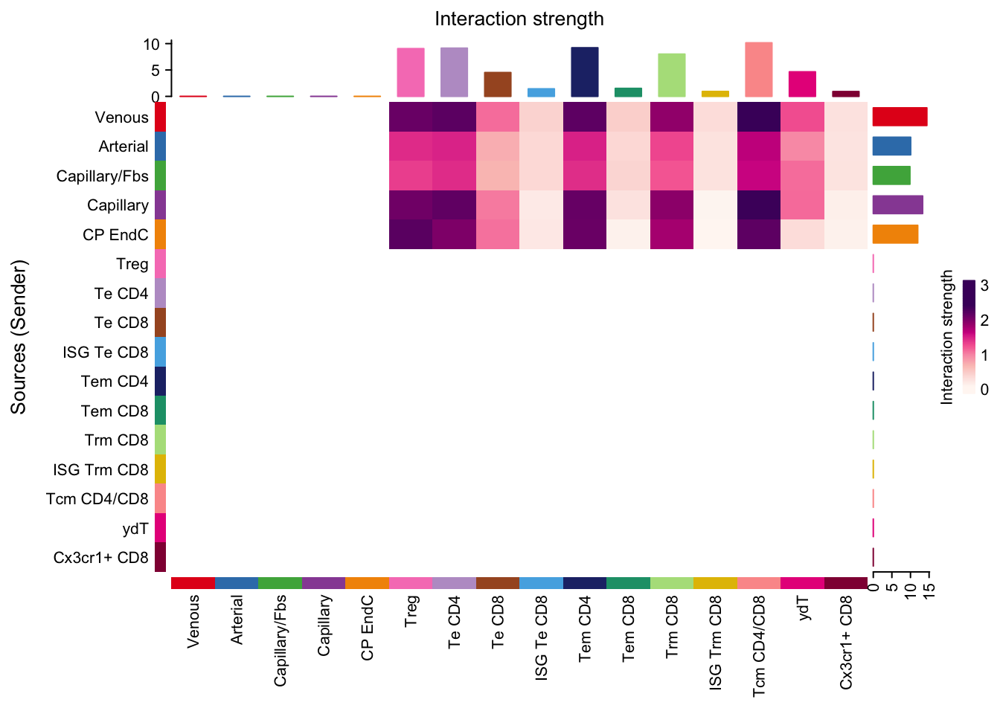
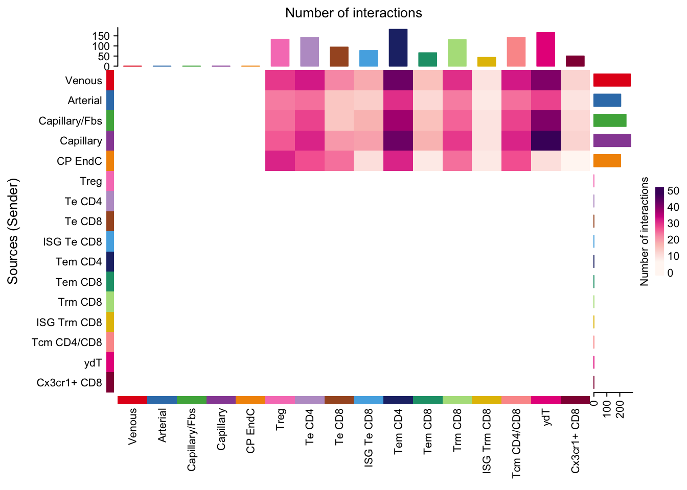
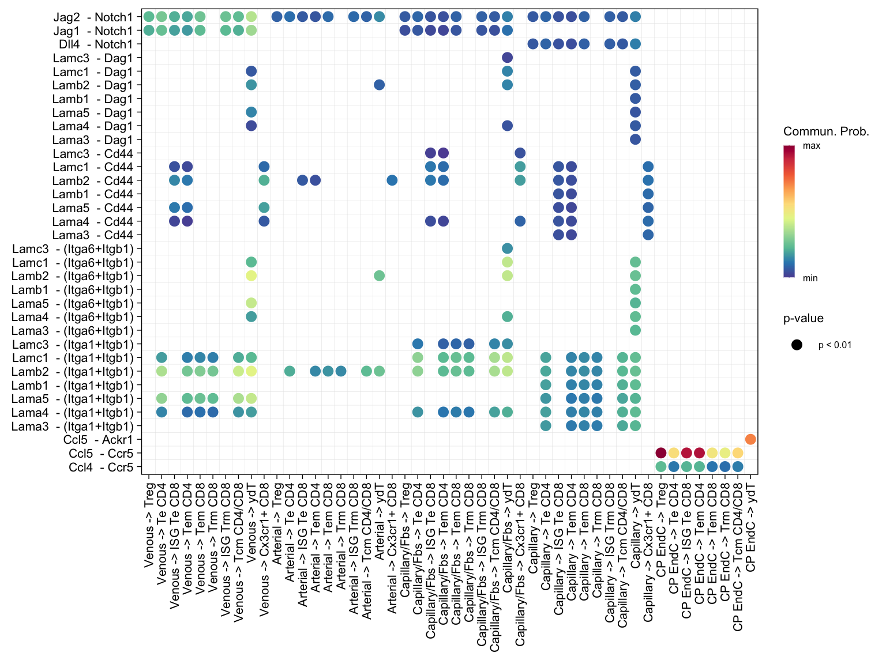
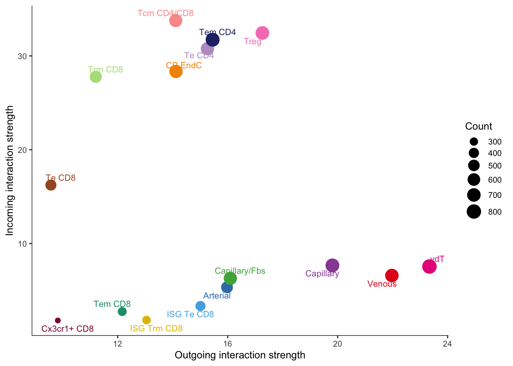

cellchat analysis - fibroblasts & T cells
2023-06-23
Last updated: 2024-08-09
Checks: 6 1
Knit directory: CNS Fibroblast Immune
Surveillance/
This reproducible R Markdown analysis was created with workflowr (version 1.7.1). The Checks tab describes the reproducibility checks that were applied when the results were created. The Past versions tab lists the development history.
The R Markdown is untracked by Git. To know which version of the R
Markdown file created these results, you’ll want to first commit it to
the Git repo. If you’re still working on the analysis, you can ignore
this warning. When you’re finished, you can run
wflow_publish to commit the R Markdown file and build the
HTML.
Great job! The global environment was empty. Objects defined in the global environment can affect the analysis in your R Markdown file in unknown ways. For reproduciblity it’s best to always run the code in an empty environment.
The command set.seed(20240724) was run prior to running
the code in the R Markdown file. Setting a seed ensures that any results
that rely on randomness, e.g. subsampling or permutations, are
reproducible.
Great job! Recording the operating system, R version, and package versions is critical for reproducibility.
Nice! There were no cached chunks for this analysis, so you can be confident that you successfully produced the results during this run.
Great job! Using relative paths to the files within your workflowr project makes it easier to run your code on other machines.
Great! You are using Git for version control. Tracking code development and connecting the code version to the results is critical for reproducibility.
The results in this page were generated with repository version d415bd4. See the Past versions tab to see a history of the changes made to the R Markdown and HTML files.
Note that you need to be careful to ensure that all relevant files for
the analysis have been committed to Git prior to generating the results
(you can use wflow_publish or
wflow_git_commit). workflowr only checks the R Markdown
file, but you know if there are other scripts or data files that it
depends on. Below is the status of the Git repository when the results
were generated:
Ignored files:
Ignored: .DS_Store
Ignored: .Rhistory
Ignored: .Rproj.user/
Ignored: analysis/.DS_Store
Ignored: analysis/.Rhistory
Untracked files:
Untracked: analysis/T_cell_annotation.Rmd
Untracked: analysis/cellchat_EndC.Rmd
Untracked: analysis/cellchat_analysis.Rmd
Untracked: analysis/cluster_annotation.Rmd
Untracked: analysis/endothelial_cell_annotation.Rmd
Untracked: analysis/fibroblast_annotation.Rmd
Untracked: analysis/fibroblast_gene_expression_anaylsis.Rmd
Untracked: analysis/merge_and_QC.Rmd
Unstaged changes:
Modified: analysis/index.Rmd
Note that any generated files, e.g. HTML, png, CSS, etc., are not included in this status report because it is ok for generated content to have uncommitted changes.
There are no past versions. Publish this analysis with
wflow_publish() to start tracking its development.
load packages
suppressPackageStartupMessages({
library(tidyverse)
library(Seurat)
library(magrittr)
library(dplyr)
library(purrr)
library(ggplot2)
library(here)
library(RColorBrewer)
library(viridis)
library(ggsci)
library(scater)
library(scran)
library(pheatmap)
library(biomaRt)
library(fgsea)
library(grid)
library(gridExtra)
library(msigdbr)
library(muscat)
library(ggpubr)
library(ExploreSCdataSeurat3)
library(enrichplot)
#library(Matrix.utils)
library(destiny)
library(clusterProfiler)
library(org.Mm.eg.db)
library(DOSE)
library(CellChat)
library(patchwork)
options(stringsAsFactors = FALSE)
})load files
basedir <- here()
EndC <- readRDS(paste0(basedir, "/data/endothelial_cells_annotated.rds"))
Tcells <- readRDS(paste0(basedir, "/data/T_cells_annotated.rds"))Prep files
Idents(Tcells) <- Tcells$clusterlabel
Tcells <- subset(Tcells, idents = c("NK cells", "ILC2"), invert = T)
Tcells$clusterlabel_cc <- "-"
Tcells$clusterlabel_cc[which(Idents(Tcells)=="γδT")] <- "γδT"
Tcells$clusterlabel_cc[which(Idents(Tcells)=="Tcm CD4/CD8")] <- "Tcm CD4/CD8"
Tcells$clusterlabel_cc[which(Idents(Tcells)=="Tem CD4")] <- "Tem CD4"
Tcells$clusterlabel_cc[which(Idents(Tcells)=="Treg")] <- "Treg"
Tcells$clusterlabel_cc[which(Idents(Tcells)=="Te CD4")] <- "Te CD4"
Tcells$clusterlabel_cc[which(Idents(Tcells)=="Te CD8")] <- "Te CD8"
Tcells$clusterlabel_cc[which(Idents(Tcells)=="ISG Te CD8")] <- "ISG Te CD8"
Tcells$clusterlabel_cc[which(Idents(Tcells)=="Tem CD8")] <- "Tem CD8"
Tcells$clusterlabel_cc[which(Idents(Tcells)=="Trm CD8")] <- "Trm CD8"
Tcells$clusterlabel_cc[which(Idents(Tcells)=="ISG Trm CD8")] <- "ISG Trm CD8"
Tcells$clusterlabel_cc[which(Idents(Tcells)=="Cx3cr1+ CD8")] <- "Cx3cr1+ CD8"
unique(Tcells$clusterlabel_cc) [1] "γδT" "Tem CD4" "Tem CD8" "Te CD8" "ISG Trm CD8" "Tcm CD4/CD8"
[7] "Treg" "Cx3cr1+ CD8" "Trm CD8" "Te CD4" "ISG Te CD8" Idents(EndC) <- EndC$clusterlabel
EndC$clusterlabel_cc <- "-"
EndC$clusterlabel_cc[which(Idents(EndC)=="Capillary")] <- "Capillary"
EndC$clusterlabel_cc[which(Idents(EndC)=="Venous")] <- "Venous"
EndC$clusterlabel_cc[which(Idents(EndC)=="CP EndC")] <- "CP EndC"
EndC$clusterlabel_cc[which(Idents(EndC)=="Arterial")] <- "Arterial"
EndC$clusterlabel_cc[which(Idents(EndC)=="Capillary/Fbs")] <- "Capillary/Fbs"
unique(EndC$clusterlabel_cc)[1] "Capillary" "Capillary/Fbs" "CP EndC" "Arterial" "Venous" ## merge
seurat <- merge(EndC, Tcells)all together
## all
Idents(seurat) <- seurat$clusterlabel_cc
seurat_all <- subset(seurat, downsample = 500)
table(seurat_all$clusterlabel_cc)
Arterial Capillary Capillary/Fbs CP EndC Cx3cr1+ CD8 ISG Te CD8 ISG Trm CD8
397 500 302 500 500 500 500
Tcm CD4/CD8 Te CD4 Te CD8 Tem CD4 Tem CD8 Treg Trm CD8
500 500 500 500 500 316 500
Venous γδT
500 221 seurat <- NormalizeData(object = seurat_all)create cellchat object
sce <- as.SingleCellExperiment(seurat_all)
rownames(sce) = gsub("^.*\\.", "", rownames(sce))
cellchat <- createCellChat(object = sce, group.by = "clusterlabel_cc")[1] "Create a CellChat object from a SingleCellExperiment object"
The `logcounts` assay is used
The `colData` assay in the SingleCellExperiment object is used as cell meta information
Set cell identities for the new CellChat object
The cell groups used for CellChat analysis are Arterial Capillary Capillary/Fbs CP EndC Cx3cr1+ CD8 ISG Te CD8 ISG Trm CD8 Tcm CD4/CD8 Te CD4 Te CD8 Tem CD4 Tem CD8 Treg Trm CD8 Venous γδT levels(cellchat@idents) <- c("Venous", "Arterial", "Capillary/Fbs", "Capillary", "CP EndC", "Treg", "Te CD4", "Te CD8", "ISG Te CD8", "Tem CD4", "Tem CD8", "Trm CD8", "ISG Trm CD8", "Tcm CD4/CD8", "ydT", "Cx3cr1+ CD8")CellChatDB <- CellChatDB.mouse # use CellChatDB.mouse if running on mouse data
# use all CellChatDB except for "Non-protein Signaling" for cell-cell communication analysis
CellChatDB.use <- CellChatDB
cellchat@DB <- CellChatDB.use# subset the expression data of signaling genes for saving computation cost
cellchat <- subsetData(cellchat) # This step is necessary even if using the whole databaseIssue identified!! Please check the official Gene Symbol of the following genes:
H2-BI H2-Ea-ps future::plan("multisession", workers = 4) # do parallel
cellchat <- identifyOverExpressedGenes(cellchat)
cellchat <- identifyOverExpressedInteractions(cellchat)
# compute communication probability and infer cellular communication network
cellchat <- computeCommunProb(cellchat)triMean is used for calculating the average gene expression per cell group.
[1] ">>> Run CellChat on sc/snRNA-seq data <<< [2024-08-09 16:32:44.897161]"
[1] ">>> CellChat inference is done. Parameter values are stored in `object@options$parameter` <<< [2024-08-09 16:36:52.987529]"cellchat <- filterCommunication(cellchat, min.cells = 35)
df.net <- subsetCommunication(cellchat)cellchat <- computeCommunProbPathway(cellchat, thresh = 1)
cellchat <- aggregateNet(cellchat)
groupSize <- as.numeric(table(cellchat@idents))
par(mfrow = c(1,2), xpd = T)
netVisual_circle(cellchat@net$count, vertex.weight = groupSize, weight.scale = T, label.edge= F, title.name = "Number of interactions")
netVisual_circle(cellchat@net$weight, vertex.weight = groupSize, weight.scale = T, label.edge= F, title.name = "Interaction weights/strength")
mat <- cellchat@net$weight
par(mfrow = c(3,4), xpd=TRUE)
for (i in 1:nrow(mat)) {
mat2 <- matrix(0, nrow = nrow(mat), ncol = ncol(mat), dimnames = dimnames(mat))
mat2[i, ] <- mat[i, ]
netVisual_circle(mat2, vertex.weight = groupSize, weight.scale = T, edge.weight.max = max(mat), title.name = rownames(mat)[i])
}

visualization of signalling pathways
# Heatmap
netVisual_heatmap(cellchat, color.heatmap = "RdPu", measure = "weight", sources.use = c("Venous", "Arterial", "Capillary/Fbs", "Capillary", "CP EndC"), targets.use = c("Treg", "Te CD4", "Te CD8", "ISG Te CD8", "Tem CD4", "Tem CD8", "Trm CD8", "ISG Trm CD8", "Tcm CD4/CD8", "ydT", "Cx3cr1+ CD8"))
netVisual_heatmap(cellchat, color.heatmap = "RdPu", measure = "count", sources.use = c("Venous", "Arterial", "Capillary/Fbs", "Capillary", "CP EndC"), targets.use = c("Treg", "Te CD4", "Te CD8", "ISG Te CD8", "Tem CD4", "Tem CD8", "Trm CD8", "ISG Trm CD8", "Tcm CD4/CD8", "ydT", "Cx3cr1+ CD8"))
# Interactions
pairLR.use <- extractEnrichedLR(cellchat, signaling = c("CCL","CXCL", "LAMININ", "NOTCH"))
#levels(cellchat@idents)
#netVisual_bubble(cellchat, sources.use = c("Pericytes","Perivascular fibroblasts", "Vascular smooth muscle cells", "Meningeal fibroblasts", "Tem CD4","Tem CD8", "Tcm CD4/CD8"), pairLR.use = pairLR.use , sort.by.source = T,sort.by.target = T, remove.isolate = TRUE)
netVisual_bubble(cellchat, sources.use = c("Venous", "Arterial", "Capillary/Fbs", "Capillary", "CP EndC"), targets.use = c("Treg", "Te CD4", "Te CD8", "ISG Te CD8", "Tem CD4", "Tem CD8", "Trm CD8", "ISG Trm CD8", "Tcm CD4/CD8", "ydT", "Cx3cr1+ CD8"), pairLR.use = pairLR.use , sort.by.source = T, sort.by.target = T, remove.isolate = TRUE)
cellchat <- netAnalysis_computeCentrality(cellchat, slot.name = "netP")
netAnalysis_signalingRole_scatter(cellchat)
plotGeneExpression(cellchat, signaling = "CXCL", enriched.only = TRUE, type = "violin")
plotGeneExpression(cellchat, signaling = "CCL", enriched.only = TRUE, type = "violin")
sessionInfo
sessionInfo()R version 4.4.1 (2024-06-14)
Platform: x86_64-apple-darwin20
Running under: macOS Sonoma 14.5
Matrix products: default
BLAS: /Library/Frameworks/R.framework/Versions/4.4-x86_64/Resources/lib/libRblas.0.dylib
LAPACK: /Library/Frameworks/R.framework/Versions/4.4-x86_64/Resources/lib/libRlapack.dylib; LAPACK version 3.12.0
locale:
[1] en_US.UTF-8/en_US.UTF-8/en_US.UTF-8/C/en_US.UTF-8/en_US.UTF-8
time zone: Europe/Berlin
tzcode source: internal
attached base packages:
[1] grid stats4 stats graphics grDevices utils datasets methods base
other attached packages:
[1] patchwork_1.2.0 CellChat_1.6.1 igraph_2.0.3
[4] DOSE_3.30.2 org.Mm.eg.db_3.19.1 AnnotationDbi_1.66.0
[7] clusterProfiler_4.12.1 destiny_3.18.0 enrichplot_1.24.2
[10] ExploreSCdataSeurat3_0.1.0 ggpubr_0.6.0 muscat_1.18.0
[13] msigdbr_7.5.1 gridExtra_2.3 fgsea_1.30.0
[16] biomaRt_2.60.1 pheatmap_1.0.12 scran_1.32.0
[19] scater_1.32.1 scuttle_1.14.0 SingleCellExperiment_1.26.0
[22] SummarizedExperiment_1.34.0 Biobase_2.64.0 GenomicRanges_1.56.1
[25] GenomeInfoDb_1.40.1 IRanges_2.38.1 S4Vectors_0.42.1
[28] BiocGenerics_0.50.0 MatrixGenerics_1.16.0 matrixStats_1.3.0
[31] ggsci_3.2.0 viridis_0.6.5 viridisLite_0.4.2
[34] RColorBrewer_1.1-3 here_1.0.1 magrittr_2.0.3
[37] Seurat_5.1.0 SeuratObject_5.0.2 sp_2.1-4
[40] lubridate_1.9.3 forcats_1.0.0 stringr_1.5.1
[43] dplyr_1.1.4 purrr_1.0.2 readr_2.1.5
[46] tidyr_1.3.1 tibble_3.2.1 ggplot2_3.5.1
[49] tidyverse_2.0.0
loaded via a namespace (and not attached):
[1] ica_1.0-3 plotly_4.10.4 zlibbioc_1.50.0
[4] tidyselect_1.2.1 bit_4.0.5 doParallel_1.0.17
[7] clue_0.3-65 lattice_0.22-6 rjson_0.2.21
[10] blob_1.2.4 rngtools_1.5.2 S4Arrays_1.4.1
[13] pbkrtest_0.5.3 parallel_4.4.1 png_0.1-8
[16] registry_0.5-1 cli_3.6.3 ggplotify_0.1.2
[19] goftest_1.2-3 VIM_6.2.2 variancePartition_1.34.0
[22] bluster_1.14.0 ggnetwork_0.5.13 BiocNeighbors_1.22.0
[25] uwot_0.2.2 shadowtext_0.1.4 curl_5.2.1
[28] mime_0.12 evaluate_0.24.0 tidytree_0.4.6
[31] leiden_0.4.3.1 ComplexHeatmap_2.20.0 stringi_1.8.4
[34] backports_1.5.0 lmerTest_3.1-3 httpuv_1.6.15
[37] rappdirs_0.3.3 splines_4.4.1 ggraph_2.2.1
[40] sctransform_0.4.1 ggbeeswarm_0.7.2 DBI_1.2.3
[43] smoother_1.3 jquerylib_0.1.4 withr_3.0.0
[46] git2r_0.33.0 corpcor_1.6.10 systemfonts_1.1.0
[49] class_7.3-22 rprojroot_2.0.4 lmtest_0.9-40
[52] tidygraph_1.3.1 colourpicker_1.3.0 htmlwidgets_1.6.4
[55] fs_1.6.4 ggrepel_0.9.5 statnet.common_4.9.0
[58] labeling_0.4.3 fANCOVA_0.6-1 SparseArray_1.4.8
[61] ranger_0.16.0 DESeq2_1.44.0 DEoptimR_1.1-3
[64] reticulate_1.38.0 hexbin_1.28.3 zoo_1.8-12
[67] XVector_0.44.0 knitr_1.48 network_1.18.2
[70] ggplot.multistats_1.0.0 UCSC.utils_1.0.0 RhpcBLASctl_0.23-42
[73] timechange_0.3.0 foreach_1.5.2 fansi_1.0.6
[76] caTools_1.18.2 data.table_1.15.4 ggtree_3.12.0
[79] RSpectra_0.16-2 irlba_2.3.5.1 ggrastr_1.0.2
[82] fastDummies_1.7.3 gridGraphics_0.5-1 lazyeval_0.2.2
[85] yaml_2.3.9 survival_3.7-0 scattermore_1.2
[88] crayon_1.5.3 RcppAnnoy_0.0.22 progressr_0.14.0
[91] tweenr_2.0.3 later_1.3.2 ggridges_0.5.6
[94] codetools_0.2-20 GlobalOptions_0.1.2 aod_1.3.3
[97] KEGGREST_1.44.1 Rtsne_0.17 shape_1.4.6.1
[100] limma_3.60.4 estimability_1.5.1 filelock_1.0.3
[103] pkgconfig_2.0.3 xml2_1.3.6 TMB_1.9.14
[106] spatstat.univar_3.0-0 EnvStats_2.8.1 scatterplot3d_0.3-44
[109] aplot_0.2.3 gridBase_0.4-7 spatstat.sparse_3.1-0
[112] ape_5.8 xtable_1.8-4 highr_0.11
[115] car_3.1-2 plyr_1.8.9 httr_1.4.7
[118] rbibutils_2.2.16 tools_4.4.1 globals_0.16.3
[121] beeswarm_0.4.0 broom_1.0.6 nlme_3.1-165
[124] HDO.db_0.99.1 dbplyr_2.5.0 lme4_1.1-35.5
[127] digest_0.6.36 numDeriv_2016.8-1.1 Matrix_1.7-0
[130] farver_2.1.2 tzdb_0.4.0 remaCor_0.0.18
[133] reshape2_1.4.4 yulab.utils_0.1.5 glue_1.7.0
[136] cachem_1.1.0 BiocFileCache_2.12.0 polyclip_1.10-7
[139] generics_0.1.3 Biostrings_2.72.1 ggalluvial_0.12.5
[142] mvtnorm_1.2-5 parallelly_1.37.1 statmod_1.5.0
[145] RcppHNSW_0.6.0 ScaledMatrix_1.12.0 carData_3.0-5
[148] minqa_1.2.7 pbapply_1.7-2 httr2_1.0.2
[151] spam_2.10-0 gson_0.1.0 dqrng_0.4.1
[154] utf8_1.2.4 graphlayouts_1.1.1 gtools_3.9.5
[157] ggsignif_0.6.4 RcppEigen_0.3.4.0.0 shiny_1.8.1.1
[160] GenomeInfoDbData_1.2.12 glmmTMB_1.1.9 memoise_2.0.1
[163] rmarkdown_2.27 scales_1.3.0 svglite_2.1.3
[166] future_1.33.2 RANN_2.6.1 Cairo_1.6-2
[169] spatstat.data_3.1-2 rstudioapi_0.16.0 cluster_2.1.6
[172] spatstat.utils_3.0-5 hms_1.1.3 fitdistrplus_1.2-1
[175] munsell_0.5.1 cowplot_1.1.3 colorspace_2.1-0
[178] FNN_1.1.4 rlang_1.1.4 xts_0.14.0
[181] DelayedMatrixStats_1.26.0 sparseMatrixStats_1.16.0 dotCall64_1.1-1
[184] shinydashboard_0.7.2 ggforce_0.4.2 circlize_0.4.16
[187] laeken_0.5.3 mgcv_1.9-1 xfun_0.46
[190] sna_2.7-2 coda_0.19-4.1 e1071_1.7-14
[193] TH.data_1.1-2 iterators_1.0.14 emmeans_1.10.3
[196] abind_1.4-5 GOSemSim_2.30.0 treeio_1.28.0
[199] bitops_1.0-7 Rdpack_2.6 promises_1.3.0
[202] scatterpie_0.2.3 RSQLite_2.3.7 qvalue_2.36.0
[205] sandwich_3.1-0 DelayedArray_0.30.1 proxy_0.4-27
[208] GO.db_3.19.1 compiler_4.4.1 prettyunits_1.2.0
[211] boot_1.3-30 beachmat_2.20.0 listenv_0.9.1
[214] Rcpp_1.0.13 edgeR_4.2.1 workflowr_1.7.1
[217] BiocSingular_1.20.0 tensor_1.5 MASS_7.3-61
[220] progress_1.2.3 BiocParallel_1.38.0 babelgene_22.9
[223] spatstat.random_3.3-1 R6_2.5.1 fastmap_1.2.0
[226] multcomp_1.4-26 fastmatch_1.1-4 rstatix_0.7.2
[229] TTR_0.24.4 vipor_0.4.7 ROCR_1.0-11
[232] vcd_1.4-12 rsvd_1.0.5 nnet_7.3-19
[235] gtable_0.3.5 KernSmooth_2.23-24 miniUI_0.1.1.1
[238] deldir_2.0-4 ggthemes_5.1.0 htmltools_0.5.8.1
[241] bit64_4.0.5 spatstat.explore_3.3-1 lifecycle_1.0.4
[244] blme_1.0-5 nloptr_2.1.1 sass_0.4.9
[247] vctrs_0.6.5 spatstat.geom_3.3-2 robustbase_0.99-3
[250] NMF_0.27 ggfun_0.1.5 future.apply_1.11.2
[253] bslib_0.7.0 pillar_1.9.0 magick_2.8.4
[256] pcaMethods_1.96.0 gplots_3.1.3.1 metapod_1.12.0
[259] locfit_1.5-9.10 jsonlite_1.8.8 GetoptLong_1.0.5 date()[1] "Fri Aug 9 16:37:08 2024"
sessionInfo()R version 4.4.1 (2024-06-14)
Platform: x86_64-apple-darwin20
Running under: macOS Sonoma 14.5
Matrix products: default
BLAS: /Library/Frameworks/R.framework/Versions/4.4-x86_64/Resources/lib/libRblas.0.dylib
LAPACK: /Library/Frameworks/R.framework/Versions/4.4-x86_64/Resources/lib/libRlapack.dylib; LAPACK version 3.12.0
locale:
[1] en_US.UTF-8/en_US.UTF-8/en_US.UTF-8/C/en_US.UTF-8/en_US.UTF-8
time zone: Europe/Berlin
tzcode source: internal
attached base packages:
[1] grid stats4 stats graphics grDevices utils datasets methods base
other attached packages:
[1] patchwork_1.2.0 CellChat_1.6.1 igraph_2.0.3
[4] DOSE_3.30.2 org.Mm.eg.db_3.19.1 AnnotationDbi_1.66.0
[7] clusterProfiler_4.12.1 destiny_3.18.0 enrichplot_1.24.2
[10] ExploreSCdataSeurat3_0.1.0 ggpubr_0.6.0 muscat_1.18.0
[13] msigdbr_7.5.1 gridExtra_2.3 fgsea_1.30.0
[16] biomaRt_2.60.1 pheatmap_1.0.12 scran_1.32.0
[19] scater_1.32.1 scuttle_1.14.0 SingleCellExperiment_1.26.0
[22] SummarizedExperiment_1.34.0 Biobase_2.64.0 GenomicRanges_1.56.1
[25] GenomeInfoDb_1.40.1 IRanges_2.38.1 S4Vectors_0.42.1
[28] BiocGenerics_0.50.0 MatrixGenerics_1.16.0 matrixStats_1.3.0
[31] ggsci_3.2.0 viridis_0.6.5 viridisLite_0.4.2
[34] RColorBrewer_1.1-3 here_1.0.1 magrittr_2.0.3
[37] Seurat_5.1.0 SeuratObject_5.0.2 sp_2.1-4
[40] lubridate_1.9.3 forcats_1.0.0 stringr_1.5.1
[43] dplyr_1.1.4 purrr_1.0.2 readr_2.1.5
[46] tidyr_1.3.1 tibble_3.2.1 ggplot2_3.5.1
[49] tidyverse_2.0.0
loaded via a namespace (and not attached):
[1] ica_1.0-3 plotly_4.10.4 zlibbioc_1.50.0
[4] tidyselect_1.2.1 bit_4.0.5 doParallel_1.0.17
[7] clue_0.3-65 lattice_0.22-6 rjson_0.2.21
[10] blob_1.2.4 rngtools_1.5.2 S4Arrays_1.4.1
[13] pbkrtest_0.5.3 parallel_4.4.1 png_0.1-8
[16] registry_0.5-1 cli_3.6.3 ggplotify_0.1.2
[19] goftest_1.2-3 VIM_6.2.2 variancePartition_1.34.0
[22] bluster_1.14.0 ggnetwork_0.5.13 BiocNeighbors_1.22.0
[25] uwot_0.2.2 shadowtext_0.1.4 curl_5.2.1
[28] mime_0.12 evaluate_0.24.0 tidytree_0.4.6
[31] leiden_0.4.3.1 ComplexHeatmap_2.20.0 stringi_1.8.4
[34] backports_1.5.0 lmerTest_3.1-3 httpuv_1.6.15
[37] rappdirs_0.3.3 splines_4.4.1 ggraph_2.2.1
[40] sctransform_0.4.1 ggbeeswarm_0.7.2 DBI_1.2.3
[43] smoother_1.3 jquerylib_0.1.4 withr_3.0.0
[46] git2r_0.33.0 corpcor_1.6.10 systemfonts_1.1.0
[49] class_7.3-22 rprojroot_2.0.4 lmtest_0.9-40
[52] tidygraph_1.3.1 colourpicker_1.3.0 htmlwidgets_1.6.4
[55] fs_1.6.4 ggrepel_0.9.5 statnet.common_4.9.0
[58] labeling_0.4.3 fANCOVA_0.6-1 SparseArray_1.4.8
[61] ranger_0.16.0 DESeq2_1.44.0 DEoptimR_1.1-3
[64] reticulate_1.38.0 hexbin_1.28.3 zoo_1.8-12
[67] XVector_0.44.0 knitr_1.48 network_1.18.2
[70] ggplot.multistats_1.0.0 UCSC.utils_1.0.0 RhpcBLASctl_0.23-42
[73] timechange_0.3.0 foreach_1.5.2 fansi_1.0.6
[76] caTools_1.18.2 data.table_1.15.4 ggtree_3.12.0
[79] RSpectra_0.16-2 irlba_2.3.5.1 ggrastr_1.0.2
[82] fastDummies_1.7.3 gridGraphics_0.5-1 lazyeval_0.2.2
[85] yaml_2.3.9 survival_3.7-0 scattermore_1.2
[88] crayon_1.5.3 RcppAnnoy_0.0.22 progressr_0.14.0
[91] tweenr_2.0.3 later_1.3.2 ggridges_0.5.6
[94] codetools_0.2-20 GlobalOptions_0.1.2 aod_1.3.3
[97] KEGGREST_1.44.1 Rtsne_0.17 shape_1.4.6.1
[100] limma_3.60.4 estimability_1.5.1 filelock_1.0.3
[103] pkgconfig_2.0.3 xml2_1.3.6 TMB_1.9.14
[106] spatstat.univar_3.0-0 EnvStats_2.8.1 scatterplot3d_0.3-44
[109] aplot_0.2.3 gridBase_0.4-7 spatstat.sparse_3.1-0
[112] ape_5.8 xtable_1.8-4 highr_0.11
[115] car_3.1-2 plyr_1.8.9 httr_1.4.7
[118] rbibutils_2.2.16 tools_4.4.1 globals_0.16.3
[121] beeswarm_0.4.0 broom_1.0.6 nlme_3.1-165
[124] HDO.db_0.99.1 dbplyr_2.5.0 lme4_1.1-35.5
[127] digest_0.6.36 numDeriv_2016.8-1.1 Matrix_1.7-0
[130] farver_2.1.2 tzdb_0.4.0 remaCor_0.0.18
[133] reshape2_1.4.4 yulab.utils_0.1.5 glue_1.7.0
[136] cachem_1.1.0 BiocFileCache_2.12.0 polyclip_1.10-7
[139] generics_0.1.3 Biostrings_2.72.1 ggalluvial_0.12.5
[142] mvtnorm_1.2-5 parallelly_1.37.1 statmod_1.5.0
[145] RcppHNSW_0.6.0 ScaledMatrix_1.12.0 carData_3.0-5
[148] minqa_1.2.7 pbapply_1.7-2 httr2_1.0.2
[151] spam_2.10-0 gson_0.1.0 dqrng_0.4.1
[154] utf8_1.2.4 graphlayouts_1.1.1 gtools_3.9.5
[157] ggsignif_0.6.4 RcppEigen_0.3.4.0.0 shiny_1.8.1.1
[160] GenomeInfoDbData_1.2.12 glmmTMB_1.1.9 memoise_2.0.1
[163] rmarkdown_2.27 scales_1.3.0 svglite_2.1.3
[166] future_1.33.2 RANN_2.6.1 Cairo_1.6-2
[169] spatstat.data_3.1-2 rstudioapi_0.16.0 cluster_2.1.6
[172] spatstat.utils_3.0-5 hms_1.1.3 fitdistrplus_1.2-1
[175] munsell_0.5.1 cowplot_1.1.3 colorspace_2.1-0
[178] FNN_1.1.4 rlang_1.1.4 xts_0.14.0
[181] DelayedMatrixStats_1.26.0 sparseMatrixStats_1.16.0 dotCall64_1.1-1
[184] shinydashboard_0.7.2 ggforce_0.4.2 circlize_0.4.16
[187] laeken_0.5.3 mgcv_1.9-1 xfun_0.46
[190] sna_2.7-2 coda_0.19-4.1 e1071_1.7-14
[193] TH.data_1.1-2 iterators_1.0.14 emmeans_1.10.3
[196] abind_1.4-5 GOSemSim_2.30.0 treeio_1.28.0
[199] bitops_1.0-7 Rdpack_2.6 promises_1.3.0
[202] scatterpie_0.2.3 RSQLite_2.3.7 qvalue_2.36.0
[205] sandwich_3.1-0 DelayedArray_0.30.1 proxy_0.4-27
[208] GO.db_3.19.1 compiler_4.4.1 prettyunits_1.2.0
[211] boot_1.3-30 beachmat_2.20.0 listenv_0.9.1
[214] Rcpp_1.0.13 edgeR_4.2.1 workflowr_1.7.1
[217] BiocSingular_1.20.0 tensor_1.5 MASS_7.3-61
[220] progress_1.2.3 BiocParallel_1.38.0 babelgene_22.9
[223] spatstat.random_3.3-1 R6_2.5.1 fastmap_1.2.0
[226] multcomp_1.4-26 fastmatch_1.1-4 rstatix_0.7.2
[229] TTR_0.24.4 vipor_0.4.7 ROCR_1.0-11
[232] vcd_1.4-12 rsvd_1.0.5 nnet_7.3-19
[235] gtable_0.3.5 KernSmooth_2.23-24 miniUI_0.1.1.1
[238] deldir_2.0-4 ggthemes_5.1.0 htmltools_0.5.8.1
[241] bit64_4.0.5 spatstat.explore_3.3-1 lifecycle_1.0.4
[244] blme_1.0-5 nloptr_2.1.1 sass_0.4.9
[247] vctrs_0.6.5 spatstat.geom_3.3-2 robustbase_0.99-3
[250] NMF_0.27 ggfun_0.1.5 future.apply_1.11.2
[253] bslib_0.7.0 pillar_1.9.0 magick_2.8.4
[256] pcaMethods_1.96.0 gplots_3.1.3.1 metapod_1.12.0
[259] locfit_1.5-9.10 jsonlite_1.8.8 GetoptLong_1.0.5